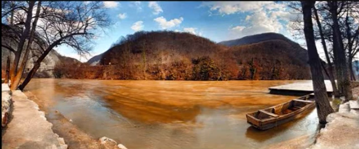
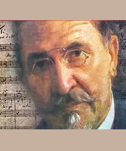
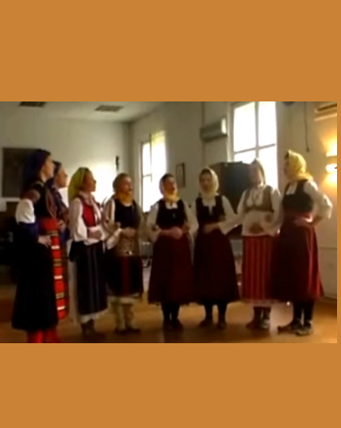

2 Å to Morava mutno teÄe
O Morava, ton eau se trouble
(Osma Rukovet - 8ème guirlande :01:39 -03:18 )
|
 |
|
|
|
|
 "Å to Morava" - Version Mokranjac |
 "Å to Morava" - Chanté par Danica ObreniÄ (1920-2004) |
 "Što Morava" - Choeur accompagné par l'orchestre VNO RTB de Belgrade |
 "Å to Morava" - Chanté par 8 étudiantes de la Faculté de musique de Belgrade |
NOTES
|
[1] Koja je ovo Morava? Mokranjac koji je svoju 8. rukovet podnaslovio âPesme sa Kosovaâ, svakako misli na âJužnu Moravuâ koja izvire kod Vitina na jugoistoku Kosova. Sajt âKod KicoÅ¡aâ ovu pesmu pretstavlja sa pominjanjem âsa okoline Kragujevcaâ, Å¡to odgovara âVelikoj Moraviâ, onom nazivu datoj reci izmeÄu uÅ¡cÌa prethodne reke u âZapadnu Moravuâ, kraj grada Varvarina s jedne strane, i njeno uÅ¡cÌe u Dunav s druge. To je i poreklo Å¡to studentkinje MuziÄke akademije u Beogradu tvrde za tu pesmu koju interpretiraju tim Äudnim njihovim visokim glasom. Evokacija nekog PaÅ¡e, te njegovih konja i njegove vojske onemogucÌava da se ova pesma datira pre 1389. godine, bitke na Kosovom Polju koja oznaÄava poÄetak osmanskog prisustva u ovom delu Balkana. Ali koja Morava je u verziji koju peva Marija Slavinska, Slovakinja iz SilbaÅ¡a, vojvoÄanskog sela severno od Dunava, zapadno od Novog Sada? Možda cÌe nas zaintrigirati imena nemarnih kupaÄica u vecÌini verzija. Preuzeta su iz kalendara katoliÄke, a ne pravoslavne crkve: Marija, AnÄela, Katarina, Magdalena, Jelena. Predlažem da pesma se tiÄe istoimene Moravske reke koja se uliva u Dunav u Bratislavi, glavnom gradu SlovaÄke. Da li bi ova pesma mogla biti dovoljno stara da je doneta u Srbiju, pored imena reke, iz âBele Srbijeâ (sadaÅ¡nje Lužice, na uÅ¡cÌu Labe u Zale)? Prvi talas seobe u Jugoslaviju datira izmeÄu 610. i 641. godine. Jezikom bliskim srpskom i danas govore LužiÄki "Vendi", koji se nazivaju i "Sorbi", odnosno "Srbi". Ovaj naziv oni daju. sami sebi. [2] Srpska "Zadruga" Uprkos ovakvom mogucÌem spoljaÅ¡njem poreklu, najduža verzija te pesme, koju je objavio sajt âVikizvornikâ, daje podatke o starom srpskom seoskom druÅ¡tvu (koje je postajalo i sve do 1. Svetskog rata). Organizovano je bilo u âzadrugamaâ, proÅ¡irenim porodicama stavljenim pod vlast jednog StareÅ¡ine. One su praktikovale "udruživanje resursa" joÅ¡ dugo pre Titovog doba! Žena koja se udala izvan svoje zadruge napuÅ¡tala je nju da bi se pridružile onoj svog muža. Ova pesma ilustruje tu Äinjenicu: veze sa starom porodicom su bile potpuno pokidane i nesrecÌna smrt se mogla prevesti za brak izvan zadruge. Ako se u srpskom jeziku âroÄaciâ i âroÄakeâ ne razlikuju od âbracÌeâ i âsestaraâ i oznaÄavaju istim reÄima (âbratâ i âsestraâ), porodiÄne veze koje ženu spajaju sa njenom novom porodicom su oznaÄene mnogo preciznijim terminima nego u francuskom jeziku, na primer. U ovoj pesmi nalazimo: âdeverâ, mužev brat; âjetrvaâ, žena muževljevog brata; âzaovaâ, muževa sestra. Ne zaboravljajucÌi âsvekrvuâ, majku muža (supruga âsvekaraâ), jedinu "preživelu" sa ovog dugaÄkog spiska u âslovaÄkojâ verziji Marije Sklabinske. Ona ima pravo na dobro osecÌanu psovku âgujo ljutaâ. !" (zmijo otrovnice!), Å¡to je verovatno neka poslovica. Imajte na umu da je glagol koji se koristi za oznaÄavanje braka u verzijama koje o njemu govore jeste âudomiti seâ Å¡to znaÄi âskrasiti seâ kada se govori o mladoj devojci. Ovde je âdomâ="casa"="DOMicile"=kuÄa. Preobraženje pejzaža na obalama Morave u zamiÅ¡ljenu porodicu u govoru mlade mrtve žene svedoÄi o umenju srpskih narodnih bardova. [3] Verzija MokranjÄeva Iako kracÌa od ostalih, ova verzija je podjednako dramatiÄna. Evo francuskog prevoda: Pourquoi donc Morava, tes flots Sont-ils troubles, chargés de sang? Grande est ma tristesse! Trois demoiselles se baignaient, Se baignaient, pauvres malheureuses! |
 Bassins hydrologiques de Serbie |
[1] De quelle Morava s'agit-il? Mokranjac qui a sous-titré sa 8ème guirlande ", "Chants du Kosovo", pense certainement à la "Morava méridionale" qui a sa source près de Viti dans le sud-est du Kosovo. Le site "Kod Kicoša" fait précéder ce chant de la mention "Environs de Kragujevac", ce qui correspond à la "Grande Morava", nom donné au fleuve entre le confluent du précédent avec la "Morava occidentale" à Varvarin d'une part, et son confluent avec le Danube d'autre part . C'est également à cette région que les étudiantes de l'Académie de musique de Belgrade assignent leur interprétation authentique avec ces étonnantes voix de tête. L'évocation d'un Pacha, de ses chevaux et de son armée interdit de dater ce chant d'avant 1389, bataille de Kosovo Polje qui marque le début de la présence ottomane dans cette partie des Balkans. Mais de quelle Morava est-il question dans la version chantée par Maria Slavinska, une Slovaque de Silbaš, un village de Voïvodine situé au nord du Danube à l'ouest de Novi Sad? On peut-être intrigué par les prénoms des baigneuses imprudentes dans la majorité des versions. Ils sont tirés du calendrier de l'église catholique et non de l'église orthodoxe: Marie, Angèle, Catherine, Madeleine, Hélène. Je suggère qu'il s'agit de la rivière homonyme de Moravie qui se jette dans le Danube à Bratislava, capitale de la Slovaquie. Ce chant pourrait-il être suffisamment ancien pour avoir été apporté en Serbie, outre le nom de la rivière, depuis la "Serbie blanche" (actuelle Lusace, au confluent de l'Elbe et de la Saale)? La première vague de migration vers la Yougoslavie date d'entre 610 et 641. Une langue proche du serbe est encore parlée par les Wendes de Lusace, qu'on appelle aussi "Sorabes", c'est à dire "Serbes", nom que les intéressés se donnent à eux-mêmes. [2] La Zadruga serbe En dépit de cette possible origine exogène, la version la plus développée, publiée par le site "Vikizvornik", renseigne sur l'ancienne société rurale serbe (jusqu'à la 1ère guerre mondiale). Elle était organisée en "zadruge", des familles élargies placées sous l'autorité d'un patriarche (Starešina). Elles pratiquaient la mise en commun des ressources, bien avant Tito. Les femmes qui se mariaient quittaient la "zadruga" pour rejoindre celle de leur mari. Notre chant illustre ce fait: les liens avec l'ancienne famille étaient complètement rompus et l'on pouvait faire passer une mort accidentelle pour un mariage en dehors de la "zadruga". Si, en Serbe, les "cousins" et "cousines" ne sont pas distingués des "frères" et "soeurs" et désignés par les mêmes mots, "brat" et "sestra", les liens de parenté qui unissent la femme à sa nouvelle famille sont désignés par des termes beaucoup plus précis qu'en français. Nous trouvons ici: "dever", le frère du mari; "jetrva", la femme du frère du mari; "zaova", la soeur du mari. Sans oublier "svekrva", la mère du mari (l'épouse du "svekar"), seule rescapée de cette longue liste dans la version "slovaque" de Maria Sklabinska et qui a droit à une invective bien sentie "gujo ljuta!" (serpent venimeux!), qui est sans doute un proverbe. Notons que le verbe utilisé pour désigner le mariage dans les versions qui en parlent est "udomiti se" qui veut dire "se caser" en parlant d'une jeune fille, où "dom"="casa"="DOMicile". La transfiguration du paysage des bords de la Morava en famille imaginaire dans le discours de la jeune morte témoigne du savoir-faire des bardes populaires. [3] La version de Mokranjac Bien qu'elle soit plus courte que les autres, cette version est tout aussi dramatique. En voici la traduction française: Pourquoi donc Morava, tes flots sont-ils troubles, chargés de sang? Grande est ma tristesse! Trois demoiselles se baignaient, Se baignaient, pauvres malheureuses! |